조선기사 (2004-08-08 기출문제)
1과목: 조선공학일반
1. 모형선을 예인수조에서 실선의 대응속도로 예인하는 것은 실선과 모형선 사이에 어떤 저항을 비례관계로 만들어 주기 위해서인가?
- 총저항
- 마찰저항
- 잉여저항
- 조와저항
(정답률: 알수없음)

2. 선체 길이 방향의 각각의 위치에 있어서의 중력과 부력의 차를 나타내는 곡선은?
- 중량곡선
- 부력곡선
- 하중곡선
- 전단력곡선
(정답률: 알수없음)
3. 다음 중 국제만제흘수선 규정에 따라 건현 결정 때 표정 건현에 수정을 해야 하는 것은?
- 폭
- 주형계수
- 흘수
- 선루
(정답률: 알수없음)
4. 다음 중 시운전 속도 정의와 직접적인 관련이 가장 적은 것은?
- 잔잔한 해상 상태(calm sea)
- 깨끗한 선체 표면(clean bottom)
- 시운전 배수량 및 트림
- 상용 마력
(정답률: 알수없음)
5. 선박 관계법상 여객선은 몇 명 이상의 여객을 태우는 배인가?
- 5 명
- 6 명
- 13 명
- 20 명
(정답률: 알수없음)
6. 다음 중 선체진동 유발과 관계없는 것은?
- 심한 슬래밍 현상
- 계속적으로 스쳐지나가는 파도
- 회전중에 있는 프로펠러
- 선체의 횡요(橫搖)
(정답률: 알수없음)
7. 침수표면적이 2350m2이고 배수량이 9500ton인 선박이 있다. 배수량이 3500ton인 상사선의 개략적인 침수표면적은?
- 1200m2
- 1208m2
- 1216m2
- 1232m2
(정답률: 알수없음)
8. 선박의 치수비에 대한 설명으로 잘못된 것은? (단, L : 선박의 길이, B : 선박의 폭, D : 선박의 깊이)
- L/B 값이 커지면 배의 속력은 빨라 진다.
- L/D 값이 커지면 배의 종강도가 감소한다.
- L/B 값이 커지면 배의 조종성이 나빠진다.
- B/D 값이 커지면 배의 복원력이 좋아진다.
(정답률: 알수없음)
9. 유의 파고(significant wave height)에 대한 설명으로 옳은 것은?
- 일정시간 동안 발생된 파들의 평균 파고
- 가장 빈번히 생기는 파들의 평균 파고
- 높은 파부터 전체 1/3개를 취하여 평균을 한 파고
- 낮은 파부터 전체 1/3개를 취하여 평균을 한 파고
(정답률: 알수없음)
10. 모형실험을 하기 위한 수조의 크기로서 수조의 측벽 및 바닥의 영향이 무시될 수 있는 크기 설명으로 잘못된 것은?
- 수조의 폭은 모형선 길이의 1.5배 이상이면 된다.
- 수심은 모형선 길이의 3/4 ∼ 1배 정도면 된다.
- 수조의 횡단면적은 모형선의 수면하 중앙 횡단면적의 약 100배 이상이면 된다.
- 수조의 길이는 모형선 길이의 20배 이상 되어야 한다
(정답률: 알수없음)
11. 빌지 킬(bilge keel)을 설치하는 경우 빌지 킬의 길이는 배 길이의 몇 % 정도인가?
- 25 ∼ 50 %
- 10 ∼ 30 %
- 60 ∼ 80 %
- 80 ∼ 100 %
(정답률: 알수없음)
12. 강선에 있어서 선도에 표시되는 선체의 면은?
- 외판의 외측면
- 외판의 내측면
- 늑골의 내측면
- 갑판의 외측면
(정답률: 알수없음)
13. 선박 횡동요를 방지하기 위한 장치가 아닌 것은?
- 사이드 드러스터(side thruster)
- 빌지 킬(bilge keel)
- 감요수조(anti rolling tank)
- 핀 안정기(fin stabilizer)
(정답률: 알수없음)
14. 선체 진동발생을 최소화하기 위해 배치되는 구조 강성이 큰 부재는?
- 선측종통재
- 사이드 거더
- 격벽
- 탱크 사이드 브래킷
(정답률: 알수없음)
15. 다음 중 비수밀 격벽으로 해도 무방한 것은?
- 선수 격벽
- 선미 격벽
- 기관실 전단 격벽
- 창내 격벽
(정답률: 알수없음)
16. 길이 200m, 속도 14.0knots인 실선과 기하학적으로 상사한 모형선을 수조시험 하려고 한다. 모형선의 속도를 3.5knots로 할 때 모형선의 길이는?
- 11.0 m
- 12.5 m
- 14.0 m
- 16.0 m
(정답률: 알수없음)
17. 종늑골 방식의 특징 설명으로 틀린 것은?
- 선각 중량이 경감된다.
- 선체 종강도가 커진다.
- 공사가 간단하고, 선창 내 돌출부가 적다.
- 액체 및 산적화물선에 적합하다.
(정답률: 알수없음)
18. 직선 치수비가 n배되는 상사 선박을 계획할 때 옳은 설명은?
- 수선면적은 2n 배가 된다.
- 배수량은 n3 배가 된다.
- 속장비는 n2 배가 된다.
- 기관출력은 n배가 된다.
(정답률: 알수없음)
19. 다음 중에서 추진효율은?
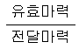
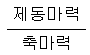
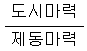
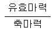
(정답률: 알수없음)
20. 현행 선박복원성규정 중에서 복원지수 C값에 영향을 주지 않은 항은?
- 경사모멘트 곡선의 형상
- 횡복원모멘트 곡선의 형상
- 전진각 및 선속
- 횡동요각 및 해수 유입각
(정답률: 알수없음)
2과목: 재료역학
21. 길이가 60㎝이고 단면이 1㎝ x 1㎝인 알미늄 봉에 인장하중 P = 10kN이 걸리면 인장하중에 의해 늘어난 길이는? (단, 알루미늄의 E = 20GPa)
- 1.5 mm
- 3 mm
- 6 mm
- 2 mm
(정답률: 알수없음)
22. 지름 30 mm의 원형 단면이며, 길이 1.5 m인 봉에 85 kN의 축방향 하중이 작용된다. 탄성계수 E = 70GPa, 프와송비 ν= 1/3일 때, 체적증가량의 근사값은 몇 mm3 인가?
- 30
- 60
- 300
- 600
(정답률: 알수없음)
23. 다음과 같은 부재의 온도를 ΔT만큼 증가시켰을 때, 부재내에 발생하는 응력은? (단, 탄성계수는 E, 열팽창계수는 α이다.)
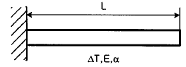
- 0
- αΔT
- EαΔT
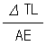
(정답률: 알수없음)
24. 바깥지름 d, 안지름 d/3인 중공원형 단면의 굽힘에 대한 단면계수는?
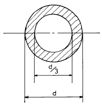
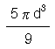
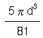
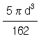
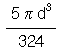
(정답률: 알수없음)
25. 보의 전 길이에 걸쳐 균일 분포하중이 작용하고 있는 단순보와 양단이 고정된 양단 고정보에서 중앙에서의 처짐량의 비는?
- 2:1
- 3:1
- 4:1
- 5:1
(정답률: 알수없음)
26. 길이가 3m인 원형 단면축의 지름이 20mm일 때 이 축이 비틀림 모멘트 100N.m를 받는다면 비틀어진 각도는? (단, 전단탄성계수 G = 80GPa 이다.)
- 0.24°
- 0.52°
- 4.56°
- 13.7°
(정답률: 알수없음)
27. 길이가 ℓ=6m인 단순보 위에 균일 분포하중 ω=2000N/m가 작용하고 있을 때 최대굽힘 모멘트의 크기는?
- 7000 N·m
- 8000 N·m
- 9000 N·m
- 10000 N·m
(정답률: 알수없음)
28. 사각형 단면의 전단응력 분포에 있어서 최대 전단응력은 전단력을 단면적으로 나눈 평균 전단응력 보다 얼마나 더 큰가?
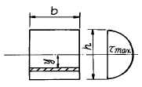
- 30 %
- 40 %
- 50 %
- 60 %
(정답률: 알수없음)
29. 지름 6 mm인 강철선 150 m가 수직으로 매달려 있을 때 자중에 의한 처짐량은 몇 mm 인가? (단, E = 200 GPa, 강철선의 비중량은 7.7x104N/m3)
- 3.02
- 3.17
- 3.58
- 4.33
(정답률: 알수없음)
30. 직경이 d인 짧은 환봉(丸棒)의 축방향에서 P인 편심 압축 하중이 작용할 때 단면상에서 인장 응력이 일어나지 않는 a의 범위는?
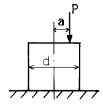
- 반경이
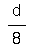
인 원내에 - 반경이
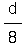
인 원밖에 - 반경이
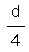
인 원내에 - 반경이
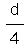
인 원밖에
(정답률: 알수없음)
31. 그림과 같은 두 개의 판재가 볼트로 체결된 채 500N의 인장력을 받고있다. 볼트의 중간단면에 작용하는 평균 전단응력은? (단, 볼트의 지름은 1cm이다.)
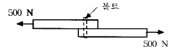
- 5.25 MPa
- 6.37 MPa
- 7.43 MPa
- 8.76 MPa
(정답률: 알수없음)
32. 그림과 같이 집중하중 P를 받는 외팔보가 있다. 모멘트 선도가 그림과 같을 때 B점에서의 처짐은? (단, E는 탄성계수, Ⅰ는 단면 2차 모멘트이다.)
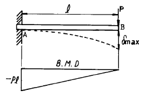
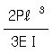
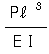
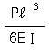
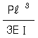
(정답률: 알수없음)
33. 탄성계수 E, 전단 탄성계수 G인 재료로 되어 있는 지름 D이고, 길이 ℓ인 둥근봉이 비틀림모멘트 T를 받고 있다. 이때 이 봉속에 저축되는 변형에너지는?
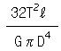
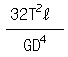
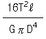
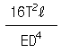
(정답률: 알수없음)
34. 그림과 같이 하중 P가 작용할 때 스프링의 변위 δ는? (이때 스프링 상수는 k이다)
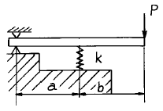
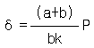
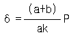
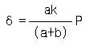
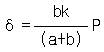
(정답률: 알수없음)
35. 그림의 얇은 용기가 균일 내압을 받고 있으며, 축 방향의 응력을 σx, 원주(圓周) 방향의 응력을 σy라고 할 때 σx/σy의 값으로 옳은 것은? (단, 용기원통의 반지름은 r이다.)
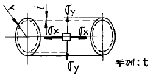
- 1/2
- 2
- 4
- 1/4
(정답률: 알수없음)
36. 공학적 변형률(engineering strain) e와 진변형률(true strain) ε 사이의 관계식으로 맞는 것은?
- ε = ln(e+1)
- ε = eln(e)
- ε = ln(e)
- ε = 3e
(정답률: 알수없음)
37. 다음 그림과 같은 균일 단면환봉이 축방향에 하중을 받고 평형이 되어 있다. Q=3P 가 되려면 W는 얼마인가?
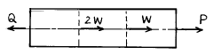
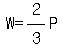
- W=3P
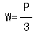
- W=2P
(정답률: 알수없음)
38. 길이 90cm, 지름 8cm의 외팔보의 자유단에 2 kN의 집중 하중이 작용하는 동시에 150 N.m의 비틀림 모멘트도 작용할 때 외팔보에 작용하는 최대 전단응력은 몇 MPa 인가?
- 15
- 16
- 17
- 18
(정답률: 알수없음)
39. 길이가 50mm인 원형단면의 철강재료를 인장하였더니 길이가 54mm로 신장되었다. 이 재료의 변형률은?
- 0.4
- 0.8
- 0.08
- 1.08
(정답률: 알수없음)
40. 다음 중 체적계수(bulk modulus)를 나타낸 식은? (단, E는 탄성계수, G는 전단탄성계수, ν는 포아송비이다.)
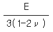
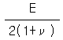
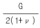
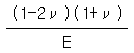
(정답률: 알수없음)
3과목: 조선유체역학
41. 유체운동학(kinematics)의 대상 크기가 아닌 것은?
- 거리
- 시간
- 속도
- 가속도
(정답률: 알수없음)
42. 그림과 같이 수은(비중 13.6)을 넣은 ∪자관의 한쪽에 PA = 330kPa의 수압이 작용하고, 다른쪽에 PB = 220kPa 인 수압이 작용할 때 수은주의 높이차는?
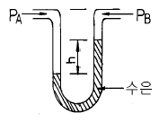
- 57.8 cm
- 82.5 cm
- 68.3 cm
- 75.5 cm
(정답률: 알수없음)
43. 경계층에 대한 설명으로 잘못된 것은?
- 벽면에서 수직방향으로 속도구배가 있는 영역이다.
- 경계층은 층류에서 난류로 바뀜에 따라 없어진다.
- 물체 표면부근에서 점성의 영향을 무시할 수 없는 얇은 층이다.
- 경계층 내부에서는 전단응력이 크게 작용한다.
(정답률: 알수없음)
44. 유동함수 ψ에 관한 설명으로 틀린 것은?
- ψ = const.는 유선을 표시한다.
- 두 개의 유선에서 간격이 좁은 곳에서의 속도는 빠르다.
- 유동함수는 연속조건과 관계가 있다.
- x 방향의 속도는 ψ의 x 방향의 기울기
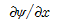
로 주어진다.
(정답률: 알수없음)
45. 평판에서 생기는 층류 경계층의 두께 δ는 평판 선단으로 부터의 거리 x 와 어떤 관계가 있는가?
- x 에 비례한다.
- x2에 비례한다.
- x1/2에 비례한다.
- x2/3에 비례한다.
(정답률: 알수없음)
46. 표면파의 파수를 k, 파장을 λ , 원진동수를 ω라고 할 때 옳은 관계식은?
- ω = 2π/λ
- k = ω/g
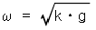
- λ = g·ω/2π
(정답률: 알수없음)
47. 유량 6m3/min, 속도 10m/s 인 물이 고정 평판에 수직으로 분사될 때, 평판에 작용하는 힘은? (단, 물의 밀도는 1000kg/m3이다.)
- 1kN
- 60kN
- 6kN
- 100N
(정답률: 알수없음)
48. 복소포텐셜 W(Z) = 2Z 인 유체 유동의 속도성분을 u, v 라고 할 때 옳은 관계식은?
- u = 2x, v = 2y
- u = 2, v = 2
- u = 2, v = 0
- u = 0, v = 2
(정답률: 알수없음)
49. 유체 유동속에 잠겨있는 물체에 작용하는 양력은?
- 항상 중력의 방향과 반대방향이다.
- 물체에 작용하는 유체력의 합력이다.
- 접근속도에 직각방향으로 물체에 작용하는 동력학적 유체력의 성분이다.
- 부력과 마찰력의 합력이다.
(정답률: 알수없음)
50. 직경 10cm 인 원관에서 층류로 흐를 수 있는 임계 레이놀즈 수를 2100 으로 할 때 층류로 흐를 수 있는 최대평균 유속은? (단, 관에는 동점성계수 1.8 x 10-6 m2/ s 의 물이 흐른다.)
- 3.78 x 10-2m/s
- 2.46 x 10-2m/s
- 2.10 x 10-2m/s
- 1.88 x 10-2m/s
(정답률: 알수없음)
51. 축적이 1/100 인 모형선 속도가 1 m/s 이고 자유표면 교란으로 인한 저항이 1 N 이었다면 이 때의 실선에서의 자유 표면교란으로 인한 저항값은? (단 모형선, 실선에서의 물의 밀도는 1000kg/m3, 모형선의 침수면적은 1m2이다. )
- 10 kN
- 1000 kN
- 50 kN
- 5 kN
(정답률: 알수없음)
52. 다음 중 수면파의 설명으로 잘못된 것은?
- 수면이 정해진 장소에서 상하 운동만하고 진행하지 않는 파를 정상파라 한다.
- 수파(水波)는 물의 표면에서만 생성된다.
- 표면파는 수심에 비하여 파장이 짧은 파(波)이다.
- 표면장력파 또는 모세파는 주로 표면장력에 의하여 지배된다.
(정답률: 알수없음)
53. 비압축성 유동에서 자유수면이 없는 경우 몰수체의 원형과 모형 사이에 상사를 이루어야 할 무차원 수는?
- 레이놀즈 수
- 프루드 수
- 웨버 수
- 캐비테이션 수
(정답률: 알수없음)
54. 유체의 성질에 대하여 틀리게 설명한 것은?
- 정지상태의 유체는 전단응력이 발생하지 않는다.
- 액체는 일정한 체적과 용기에 따라 잘 규정될 수 있는 표면을 갖는다.
- 액체는 기체보다 분자운동의 공간과 자유도가 크다.
- 유체는 그 분자들의 기동성과 간격을 갖는다.
(정답률: 알수없음)
55. 마하수를 M, 물체의 속도를 V, 음속을 a 라 할 때 다음 관계식 중 옳은 것은?
- M = V / a
- M = a V
- M = a / V
- M = 1/a V
(정답률: 알수없음)
56. 전체 표면적이 30m2이고 물에 침수된 표면적이 20m2인 물체를 물 위에서 10 m/s 로 예인했을 때 항력이 10 kN 이었다면 항력계수는 얼마인가?
- 1.0 × 10-2
- 1.0 × 10-3
- 2.0 × 10-2
- 1.5 × 10-1
(정답률: 알수없음)
57. 그림과 같은 고정된 수력터빈의 깃에 대하여 젯(jet)이 Vm/s 의 속도로 깃에 따라 유동할 때, 중심선 방향으로 깃에 대하여 미치는 힘을 옳게 나타낸 것은? (단, 유체의 밀도를 ρ, 젯의 유량을 Q라 한다.)
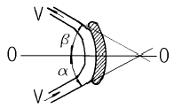
- ρQ V (sin α + sinβ)
- ρQ V (sin α + cosβ)
- ρQ V (cos α + cosβ)
- ρQ V (cos α + sinβ)
(정답률: 알수없음)
58. 그림과 같은 물통에서 구멍 B로부터 나오는 물의 순간 최대 유출속도는? (단, 물통상부는 대기에 노출되어 있다.)
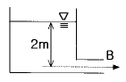
- 4.15 m/s
- 6.26 m/s
- 5.32 m/s
- 8.33 m/s
(정답률: 알수없음)
59. 일반적인 유체 흐름에 있어서 관마찰계수(f)는?
- 상대 조도와 프루드수의 함수이다.
- 프루드수와 마하수의 함수이다.
- 레이놀즈수와 상대조도의 함수이다.
- 마하수와 레이놀즈수의 함수이다.
(정답률: 알수없음)
60. 그림과 같이 노즐을 수평으로 설치하여 h=3.5m 인 높이에서 L=8m 인 거리에 물이 도달할 수 있도록 하자면 유속은 얼마가 되어야 하는가?
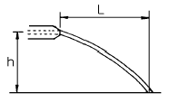
- 8.25 m/s
- 9.47 m/s
- 11.52 m/s
- 7.42 m/s
(정답률: 알수없음)
4과목: 선체의장 및 선체구조역학
61. 재료의 피로한도는 무한 횟수만큼 작용시켜야 파괴가 일어나는 응력값이다. 구조용 강재의 피로한도에 가장 큰 영향을 미치는 재료의 물리적 특성은?
- 강성
- 비례한계
- 탄성한계
- 최후강도
(정답률: 알수없음)
62. 화물창 내에 설치된 기둥(pillar)의 좌굴하중을 가장 크게 하는 경계조건은?
- 상하 양단을 힌지 죠인트로 한다.
- 하단은 고정으로 하고 상단을 힌지 죠인트로 한다.
- 상단은 고정으로 하고 하단을 힌지 죠인트로 한다.
- 상하 양단을 고정으로 한다.
(정답률: 알수없음)
63. 천창(sky light)에 대하여 틀리게 설명한 것은?
- 창내(艙內)의 통풍 및 환기를 위하여 갑판상에 설치된다.
- 선박에서 채용되고 있는 자연채광의 하나이다.
- 채광 방향이 상부에서만으로 한정된다.
- 기계실 직상의 것은 소형의 안장형이며, 통풍과 채광을 겸한다.
(정답률: 알수없음)
64. 화물유 탱크를 청소할 때 생기는 기름 섞인 물을 모아두는 탱크는?
- 피크 탱크(peak tank)
- 스필 탱크(spill tank)
- 피크링 탱크(pickling tank)
- 슬롭 탱크(slop tank)
(정답률: 알수없음)
65. 타(rudder)의 전 면적이 회전축의 뒤쪽에 있으며, 단판타는 거의 모두 이 형식이고, 구조가 간단하며, 수리가 용이한 타는?
- 불균형 타
- 균형 타
- 반균형 타
- 역전 타
(정답률: 알수없음)
66. 다음 중 선내 통신장치에 속하지 않는 것은?
- 전성관(voice tube)
- 인터폰(interphone)
- 엔진 텔레그래프(engine telegraph)
- 컴파스(compass)
(정답률: 알수없음)
67. 배의 중앙에 중량물을 실었을 때는 다음 중 어느 상태와 동일한가?
- 새깅(sagging)상태
- 호깅(hogging)상태
- 슬로싱(sloshing)상태
- 휘핑(whipping)상태
(정답률: 알수없음)
68. 구명정에 대한 설명으로 틀린 것은?
- 복원력이 커야 한다.
- 내파성이 커야 한다.
- 속도가 커야 한다.
- 내부에 부체가 격납된다.
(정답률: 알수없음)
69. 2개의 닻과 체인을 합한 무게가 40ton 이다. 이것을 9m/sec 로 감아 올리려면 소요 동력은?(오류 신고가 접수된 문제입니다. 반드시 정답과 해설을 확인하시기 바랍니다.)
- 60 PS
- 70 PS
- 80 PS
- 90 PS
(정답률: 알수없음)
70. 선박 계류장치 중 스탠드 롤러(stand roller)의 기능은?
- 로프의 높이 조정
- 로프의 방향 전환
- 로프의 구속
- 로프의 회전 방지
(정답률: 알수없음)
71. 계선 로프(mooring rope)를 본선에 묶어 두기 위해 사용되는 의장품은?
- 클로즈드 쵹(closed chock)
- 갑판 스탠드 롤러(deck stand roller)
- 페어 리드(fair lead)
- 볼라드(bollard)
(정답률: 알수없음)
72. 자동차 운반선(roll on/roll off carrier)의 선미쪽에 설치되는 차량의 주통로는?
- 사이드 램프(side ramp)
- 스턴 램프(stern ramp)
- 고정 램프(fixed ramp)
- 바우 바이저(bow visor)
(정답률: 알수없음)
73. 격벽 등에 부착되는 보강재의 끝단 처리 방법 중 고착 강도가 가장 약한 것은?
- 양단 브래킷
- 양단 클립
- 양단 스닙
- 일단 브래킷, 타단 클립
(정답률: 알수없음)
74. 길이 100m 인 선박의 부력이 전구간에 걸쳐 100ton/m로 균일 분포하고, 중량은 선체 중앙부 50m 구간에 걸쳐서만 균일하게 분포한다고 가정할 때 이 배의 최대굽힘모멘트는?
- 2500 ton · m
- 25000 ton · m
- 62500 ton · m
- 125000 ton · m
(정답률: 알수없음)
75. 선체에 래킹(racking) 변형이 생기기 쉬운 경우가 아닌 것은?
- 심한 횡요 운동을 할 경우
- 피칭 운동으로 과도한 관성력이 발생한 경우
- 측면에서 오는 파도의 충격으로 동적하중이 발생한 경우
- 파랑 중 항해시 중심선에 대하여 비대칭 하중을 받는 경우
(정답률: 알수없음)
76. 바깥지름(d2)이 60cm, 안지름(d1)이 55cm인 중공(中空) 원형 단면의 단면계수는?
- 약 6233.1cm3
- 약 74758.8cm3
- 약 6796.3cm3
- 약 3114.6cm3
(정답률: 알수없음)
77. 선박의 항해용구로만 짝지워져 있는 것은?
- 자이로컴파스, 크로노미터, 육분의
- 마스트, 윈치, 데릭 포스트
- 양화기, 앵커, 로프
- 크리트, 링 볼트, 볼라드
(정답률: 알수없음)
78. 선박구조에서 전단력의 발생과 거리가 가장 먼 구조부는?
- 이중저 늑골(floor) 단부
- 중립축 근처의 외판
- 상갑판 중앙부
- 선수에서 배길이 1/4 지점의 횡격벽 위치
(정답률: 알수없음)
79. 산적화물선의 화물창에 설치되는 호퍼(hopper)의 역할이 아닌 것은?
- 짐을 미끄러지게 하여 하역능률 향상
- 화물 보호 기능
- 이중저 구조 지지
- 비틀림 강성 향상
(정답률: 알수없음)
80. 다음 중 가장 확실한 선체 종강도 향상 방법은?
- 선체 중앙횡단면의 2차모멘트 증가
- 선체 중앙횡단면의 단면계수 증가
- 선체 중앙횡단면의 단면적 증가
- 선체 중앙횡단면의 중립축 위치 조정
(정답률: 알수없음)
5과목: 선박건조공학 및 선박동력장
81. 프로펠러 회전 중에 축계와 선체간에 전위차가 생기는 이유는?
- 축계의 회전에너지에 의하여
- 축계 슬리이브 등의 동합금과 선체의 이온화 경향 때문에
- 선내 발전시설로부터의 누전 때문에
- 선체와 해수간의 마찰에 의하여
(정답률: 알수없음)
82. 가스 터빈기관에서 재생사이클의 설명으로 옳은 것은?
- 고압 터빈으로 부터 나오는 가스를 다시 가열하여 사용한다.
- 터빈으로부터의 배기가스를 이용하여 압축기로부터 압축공기를 예열한다.
- 압축을 2단압축 이상으로 하여 각 단 사이에 중간 냉각을 시켜 효율을 증진시킨다.
- 다단압축을 하고 그 중간에 재열기와 중간냉각기를 설치하여 열효율을 증가시킨다.
(정답률: 알수없음)
83. 조선소의 공장배치에서 가장 먼저 고려하여야 할 사항은?
- 부재의 원활한 흐름
- 선박의 수주 능력
- 보유 크레인의 규모와 수량
- 생산관리 기법
(정답률: 알수없음)
84. 강의 청열취성(靑熱脆性) 온도의 범위는?
- 100 ∼ 200℃
- 250 ∼ 450℃
- 500 ∼ 650℃
- 800 ∼ 1000℃
(정답률: 알수없음)
85. 숍 프라이머(shop primer)를 옳게 설명한 것은?
- 강재를 공장 내에서 처음으로 적절한 크기로 절단하는 작업
- 강판을 공장내에서 처음으로 프레스 또는 롤러를 이용하여 굽힘가공하는 과정
- 건조기간 중의 녹방지를 위해 강판을 shot blasting 한 후 강판에 처음으로 실시하는 도장 작업
- 작은 철강입자를 고속으로 강판표면에 충돌시켜 강판 표면의 녹이나 불순물을 제거하는 작업
(정답률: 알수없음)
86. 지상조립 또는 선대상 조립에서 조립 정밀도를 유지할 목적으로 조립용 기준선이 사용되는데 다음 중 기준선이 될 수 없는 것은?
- 프레임 라인(frame line)
- 워터 라인(water line)
- 버톡 라인(buttock line)
- 다이아거널 라인(diagonal line)
(정답률: 알수없음)
87. 예열을 필요로 하는 용접이 아닌 것은?
- 크랙 발생부의 보수 용접
- 균열발생의 염려가 있는 곳의 용접
- 판두께 15 mm이하의 강판 용접
- 대형 주강품과 강판을 결합하는 용접
(정답률: 알수없음)
88. 어떤 선박의 유효마력이 240PS 일 때 주기관의 실제마력은? (단, 추진기 효율은 60%, 기계효율은 85% 이다.)
- 400 PS
- 471 PS
- 282 PS
- 785 PS
(정답률: 알수없음)
89. 옥내 대조립 공장의 위치 선정에 대한 설명으로 잘못된 것은?
- 가공공장, 소조립 공장과 직결되는 위치에 있어야 한다.
- 내업공장보다는 선대(도크)와의 상호 관련성을 중시 하여야 한다.
- 재료의 운반 능률을 고려하여야 한다.
- 자동화설비를 고려하여 충분한 면적을 가져야 한다.
(정답률: 알수없음)
90. 프로펠러 추진기의 반경을 R 로 할 때, 추진기의 평균 피치는 어느 위치에서 측정하는가?
- 0.5 R
- 0.7 R
- 0.8 R
- 0.9 R
(정답률: 알수없음)
91. 선박용 원통보일러와 비교한 수관식 보일러의 특징 설명으로 잘못된 것은?
- 보일러 효율이 높다.
- 보일러 급수의 수질이 문제되지 않는다.
- 증기 발생에 소요되는 시간이 짧다.
- 고온, 고압의 증기를 발생시킬 수 있다.
(정답률: 알수없음)
92. 프로펠러의 캐비테이션(cavitation) 발생을 방지하기 위한 설계 방법으로 부적합한 것은?
- 프로펠러 날개의 단위 면적당 추력을 되도록 작게 한다.
- 불균일 반류의 영향을 되도록 받지 않도록 추진기와 외판, 선미골재 등과의 간격을 충분히 둔다.
- 지름이 큰 프로펠러를 사용하고, 프로펠러 피치각을 크게 하여 회전수를 감소시킨다.
- 프로펠러 날개 끝에 가까운 부분은 에어로포일형으로 하고, 0.8R 부터 날개 뿌리까지는 원호형으로 한다.
(정답률: 알수없음)
93. 사바테 사이클(sabathe cycle) 기관은?
- 가솔린 기관
- 오토 기관
- 공기분사식 디젤기관
- 무기분사식 디젤기관
(정답률: 알수없음)
94. 외연기관과 비교한 내연기관의 장점 설명으로 틀린 것은?
- 왕복부분이 없고, 실린더 내의 압력변화가 작으므로 소음과 진동이 작다.
- 연료를 실린더 내에서 직접 연소시키므로 연소실이 작고, 따라서 열효율이 높고 경제적이다.
- 기관의 시동, 정지 및 속도의 조정이 쉽고, 시동 전후의 열손실이 없다.
- 보일러와 같은 부속장치가 없으므로 소형 경량으로 할 수 있다.
(정답률: 알수없음)
95. 선박 추진 축계장치의 축 종류에 속하지 않는 것은?
- 크랭크축
- 추력축
- 중간축
- 추진축
(정답률: 알수없음)
96. 선형 결정짓기에 대한 설명으로 옳은 것은?
- 인접 블록과의 결합부를 용접하여 선체를 굳히는 작업이다.
- 탑재가 완료된 블록을 기준선에 맞추어 소정의 위치, 각도, 구배로 배치 연결하는 작업이다.
- 목표로 하는 배의 성능을 얻을 수 있도록 선체의 형상을 설계하는 작업이다.
- 크레인으로 도크 위에 블록을 쌓아나가는 작업이다.
(정답률: 알수없음)
97. 조선소 설비 중 상하 높이의 조절이 가능하여 곡외판 블록을 거치하는데 사용되는 설비는?
- 사각정반
- 포지셔너
- 핀 지그
- 클램핑 거더
(정답률: 알수없음)
98. 선체 외판전개도로부터 외판의 치수에 따라서 외판의 심(seam)위치를 결정하는 작업은?
- 랜딩(landing)
- 스틸러(stealer)
- 시프트(shift)
- 스킨(skin)
(정답률: 알수없음)
99. 선박용 보조기계가 아닌 것은?
- 발전기
- 수차(水車)
- 펌프(pump)
- 압축기
(정답률: 알수없음)
100. 플라즈마 절단법에 대한 설명 중 틀린 것은?
- 고밀도의 열원인 플라즈마를 이용하여 국부적으로 강재를 녹여서 고압가스로 불어내어 절단하는 방법이다
- 플라즈마 아크 방식은 전기전도성이 없는 세라믹이나 플라스틱의 절단에도 사용할 수 있다.
- 가스절단보다 절단 속도가 2 ∼ 5배 빠르며 절단변형이 적다.
- 전극으로는 텅스텐, 하프늄, 지르코늄 및 그들의 합금이 사용된다.
(정답률: 알수없음)